Comparison Report: s75-direct-vs-continuation
Generated 2026-04-08T18:27:38.584805+00:00 from commit f9a27e7.
This report compares an achieved run against an expected reference. If the expected side is a baseline fixture, treat the deltas as guidance for human review rather than absolute truth, especially for timing or scenario-dependent outputs.
Status
fail
2 run(s), 9 fail signal(s), 5 warning signal(s).
Comparison Context
Expected vs Achieved
Current runs: 2. Baselines: 1.
Default policy: correctness drift fails, performance drift warns.
Execution
incomplete
Comparison validity: invalid
Warnings
- None
Interpretation
Read execution status first. If execution is incomplete, numerical deltas are descriptive only and should not be treated as validated physics drift. For baseline comparisons, timing and scenario-dependent differences may be expected even when correctness checks pass.
Scenario Reading
canonical disk source pf theta closed continuation s75 (expected)
Mechanisms: hydraulic:closedpreferred_hydrationsource_drivensource_pfsource_thetasource_region:all
Preferred hydration driving storage and deformation responses.
Model setup. Simple-geometry reboot continuation lane on the canonical four-lumen disk with no diagonal microlumen proxy seeds; used to escalate the coupled source law only after the weak ablation and hydraulic gates stay interpretable.
Expected dynamics. Continuation segment for the coupled pf+theta source law on the simple closed canonical disk; restart from the previous converged checkpoint and stop escalation once the lane becomes non-interpretable.
Hydraulic mode. closed
Source pf. 75
Source theta. 75
Source region. all
Observable semantics. In source-driven reboot reports, `mass` is the lumen-phase measure derived from `0.5*(1+pf)`, not a total constituent-mass budget; `ratio` is left/right lumen balance, not a generic growth ratio.
Read first: area_ratio, max_u, theta_eq_range, storage_strain_range
Where to observe it.
- Use the trend plots to inspect area_ratio, max_u, and the derived range metrics.
- Use the montage/frame artifacts to see whether deformation localizes near the lumen or the outer wall.
- Interpret `mass` as a lumen-phase measure and `ratio` as left/right lumen balance; neither is a direct total-mass or generic growth observable.
canonical disk source pf theta closed direct start s75 (achieved)
Mechanisms: hydraulic:closedpreferred_hydrationsource_drivensource_pfsource_thetasource_region:all
Preferred hydration driving storage and deformation responses.
Model setup. Simple-geometry reboot direct-start lane on the canonical four-lumen disk with no diagonal microlumen proxy seeds; used to compare cold starts against checkpoint continuation at the same source amplitude and horizon.
Expected dynamics. Direct-start comparison lane for the coupled pf+theta source law on the simple closed canonical disk without checkpoint continuation.
Hydraulic mode. closed
Source pf. 75
Source theta. 75
Source region. all
Observable semantics. In source-driven reboot reports, `mass` is the lumen-phase measure derived from `0.5*(1+pf)`, not a total constituent-mass budget; `ratio` is left/right lumen balance, not a generic growth ratio.
Read first: area_ratio, max_u, theta_eq_range, storage_strain_range
Where to observe it.
- Use the trend plots to inspect area_ratio, max_u, and the derived range metrics.
- Use the montage/frame artifacts to see whether deformation localizes near the lumen or the outer wall.
- Interpret `mass` as a lumen-phase measure and `ratio` as left/right lumen balance; neither is a direct total-mass or generic growth observable.
Expected vs Achieved
| Role | Source | Label | Execution | Final Time | Accepted Steps |
|---|---|---|---|---|---|
| expected | current | mig-cont-s75-supported | complete | 0.14 | 21 |
| achieved | current | mig-direct-s75 | incomplete | 0.111629 | 838 |
| expected | baseline | mig-cont-s75-supported | complete | 0.14 | 21 |
Run Table
| Label | Role | Scenario | Backend | Geometry | Solver | Restart | Status | Wall Time | DoF | Cells | Lumen-phase measure | Left/right lumen balance | min_J |
|---|---|---|---|---|---|---|---|---|---|---|---|---|---|
| mig-cont-s75-supported | expected | canonical disk source pf theta closed continuation s75 | snes | disk | monolithic | restart | pass | 57.9394 | 18342 | 2972 | 0.750902 | 1.64757 | 1.04558 |
| mig-direct-s75 | achieved | canonical disk source pf theta closed direct start s75 | snes | disk | monolithic | startup | fail | 13246.8 | 18342 | 2972 | 4.06189 | 0.966407 | 0.0135171 |
Status Checks
mig-cont-s75-supported (expected)
- pass Accepted metrics rows present
- pass Run advanced beyond the initial state
- pass Run reached target time
- pass Final accepted step converged
- pass Final min_J is positive
- pass Post-processing completed
mig-direct-s75 (achieved)
- pass Accepted metrics rows present
- pass Run advanced beyond the initial state
- fail Run reached target time
- pass Final accepted step converged
- pass Final min_J is positive
- pass Post-processing completed
- warn 61 failed attempt row(s) recorded before acceptance/termination.
Trends
Area Ratio
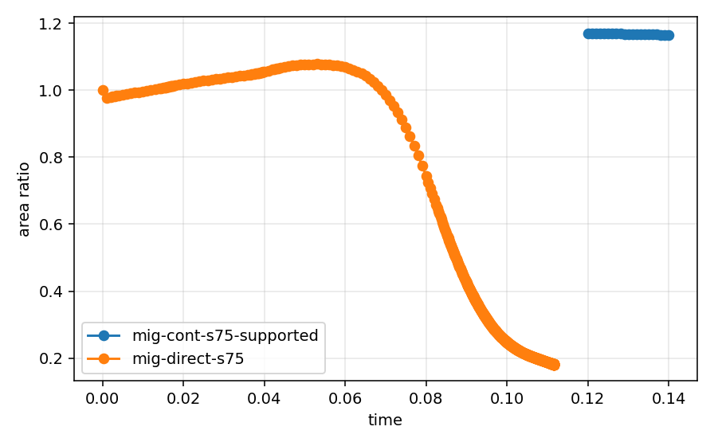
Max Displacement
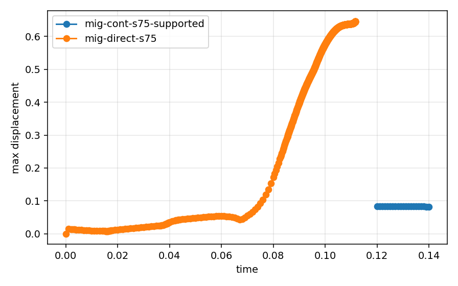
Left/Right Lumen Balance
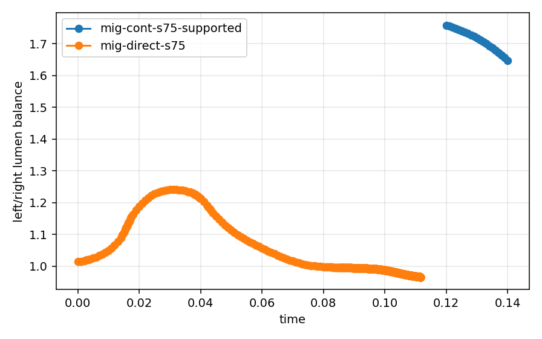
Total Energy (P-Form)
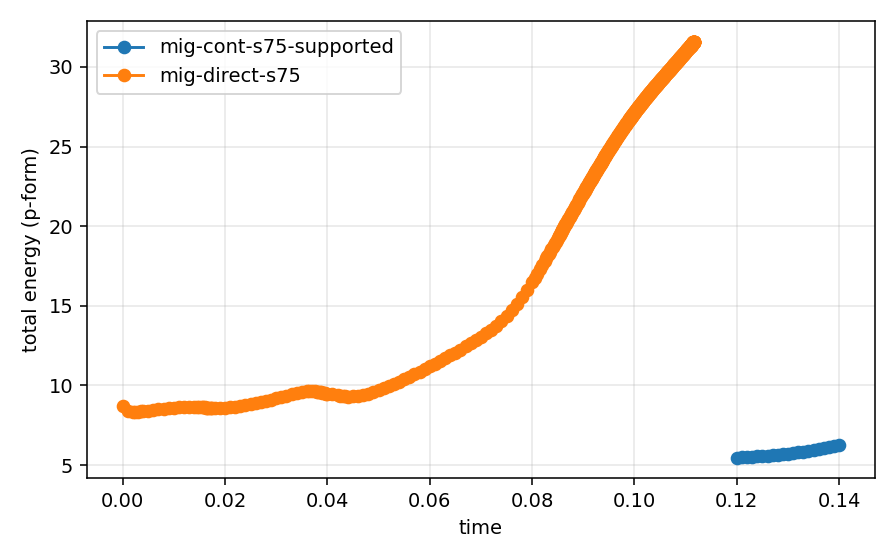
Theta-Form Energy
Cross-Form Energy
Lumen-Phase Measure
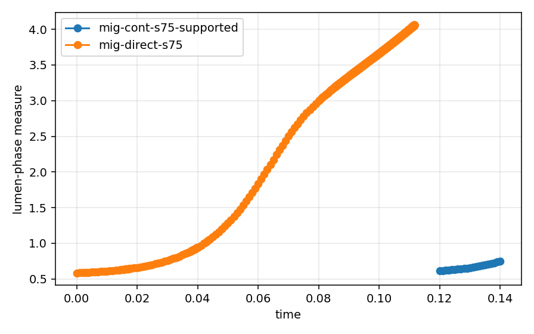
Split Iterations
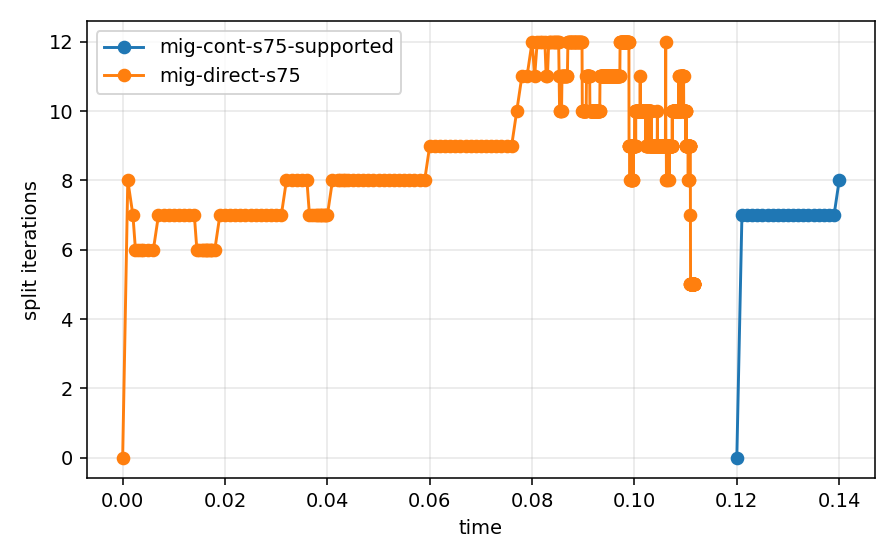
Mesh Cells
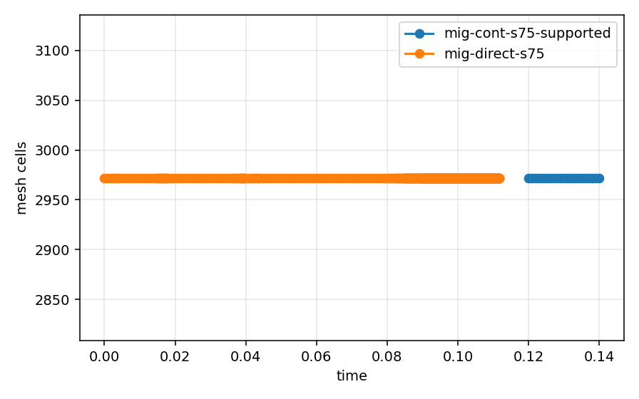
Flow Potential Range
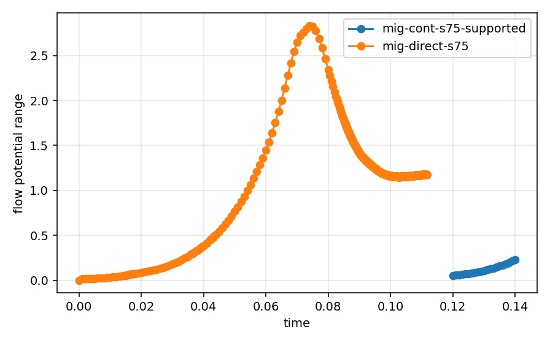
Effective Pressure Range
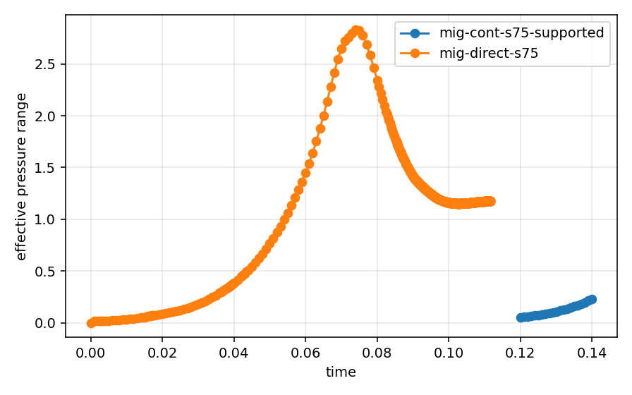
Theta_Eq Range
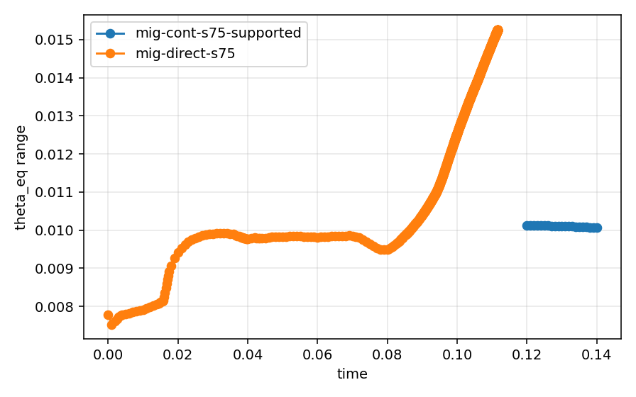
Storage Strain Range
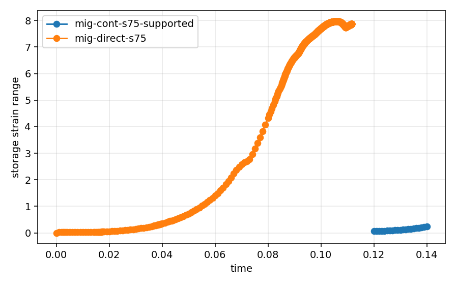
Wall Time
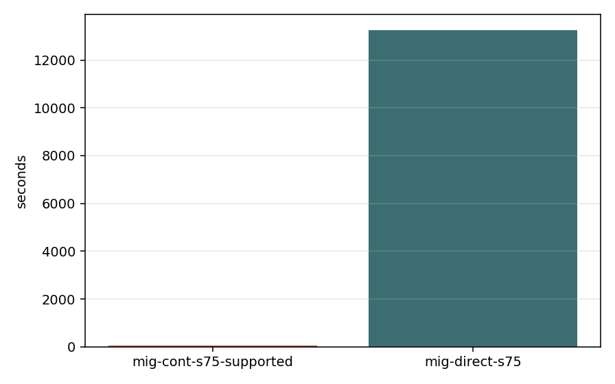
Artifacts
mig-cont-s75-supported
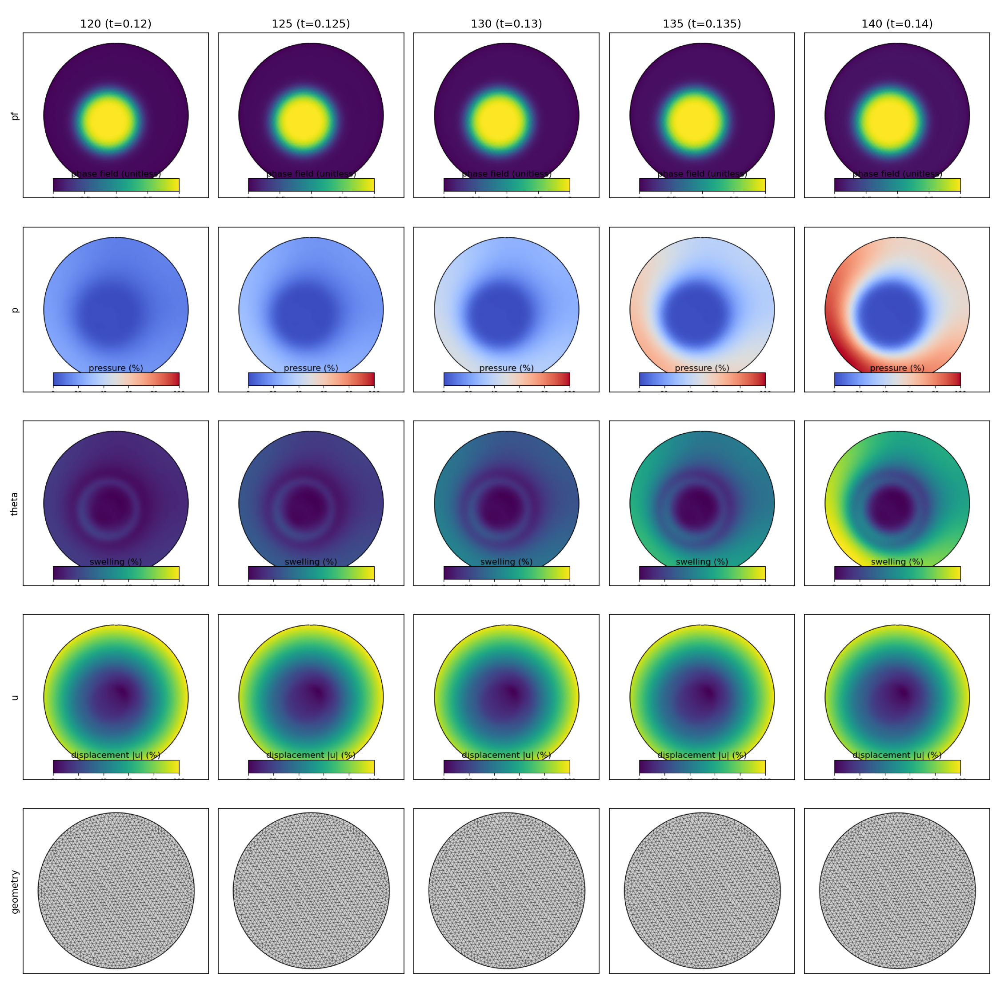
{kind=link}
{kind=link}
mig-direct-s75
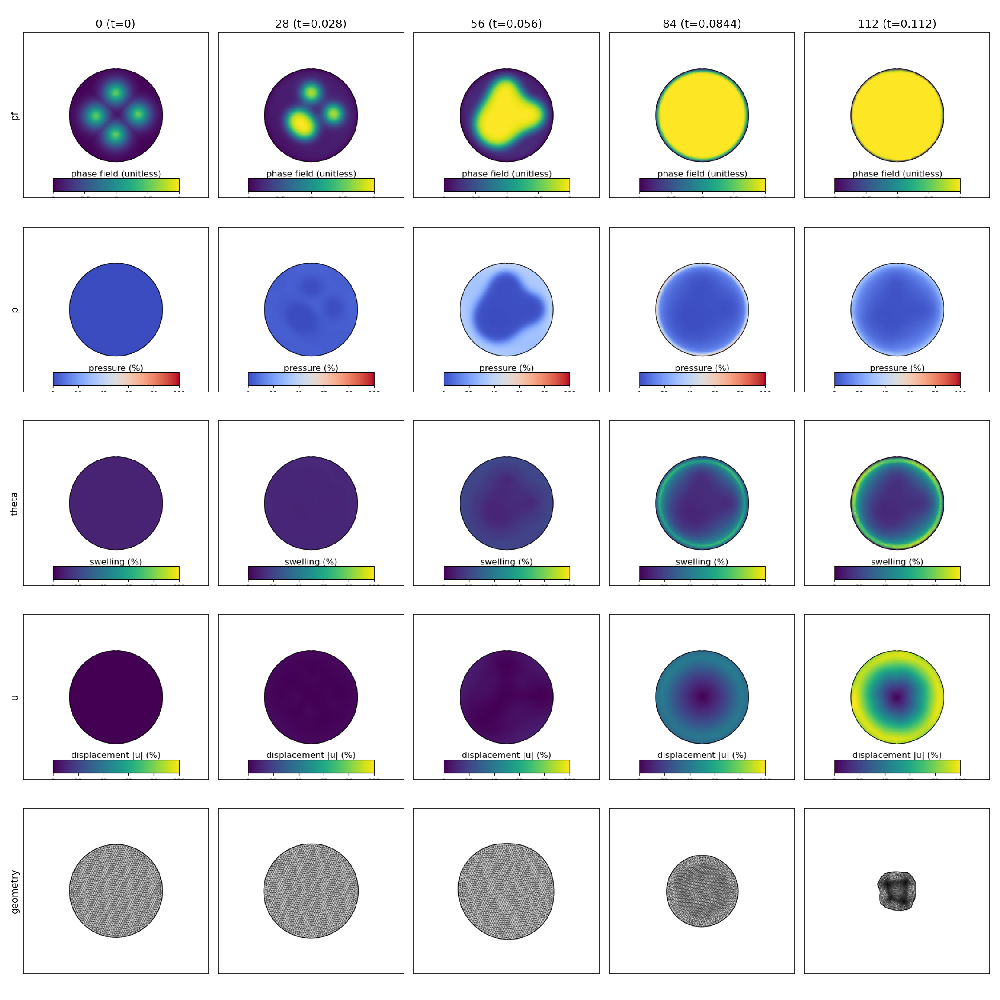
{kind=link}
{kind=link}
Baseline Deltas
| Run | Metric | Current | Baseline | Abs Delta | Rel Delta | Abs Tol | Rel Tol | Status |
|---|---|---|---|---|---|---|---|---|
| mig-direct-s75 | Final lumen-phase measure | 4.06189 | 0.750902 | 3.31099 | 4.40935 | 1e-08 | 1e-06 | fail |
| mig-direct-s75 | Final left/right lumen balance | 0.966407 | 1.64757 | 0.681162 | 0.413435 | 1e-08 | 1e-06 | fail |
| mig-direct-s75 | Lumen total volume | 0.421011 | 0.5305 | 0.109489 | 0.206388 | 1e-08 | 1e-06 | fail |
| mig-direct-s75 | Lumen deformed volume | 0.421011 | 0.5305 | 0.109489 | 0.206388 | 1e-08 | 1e-06 | fail |
| mig-direct-s75 | Lumen component count | 1 | 1 | 0 | 0 | 0 | 0 | pass |
| mig-direct-s75 | Final min_J | 0.0135171 | 1.04558 | 1.03206 | 0.987072 | 1e-08 | 1e-06 | fail |
| mig-direct-s75 | Final area ratio | 0.181012 | 1.16475 | 0.983734 | 0.844591 | 1e-08 | 1e-06 | fail |
| mig-direct-s75 | Final min_pf | -0.691665 | -0.976918 | 0.285253 | 0.291993 | 1e-08 | 1e-06 | fail |
| mig-direct-s75 | Final max_pf | 2.36013 | 1.03659 | 1.32354 | 1.27682 | 1e-08 | 1e-06 | fail |
| mig-direct-s75 | Wall time | 13246.8 | 57.9394 | 13188.8 | 227.632 | 0.25 | 0.1 | warn |
| mig-direct-s75 | Total DoF | 18342 | 18342 | 0 | 0 | 0 | 0.02 | pass |
| mig-direct-s75 | Split iterations total | 7674 | 141 | 7533 | 53.4255 | 1 | 0.1 | warn |
| mig-direct-s75 | CH SNES iterations total | 843 | 20 | 823 | 41.15 | 1 | 0.1 | warn |
| mig-direct-s75 | Biot iterations total | 1890 | 40 | 1850 | 46.25 | 1 | 0.1 | warn |
| mig-direct-s75 | Final mesh cells | 2972 | 2972 | 0 | 0 | 1 | 0.02 | pass |
| mig-direct-s75 | Final mesh vertices | 1550 | 1550 | 0 | 0 | 1 | 0.02 | pass |